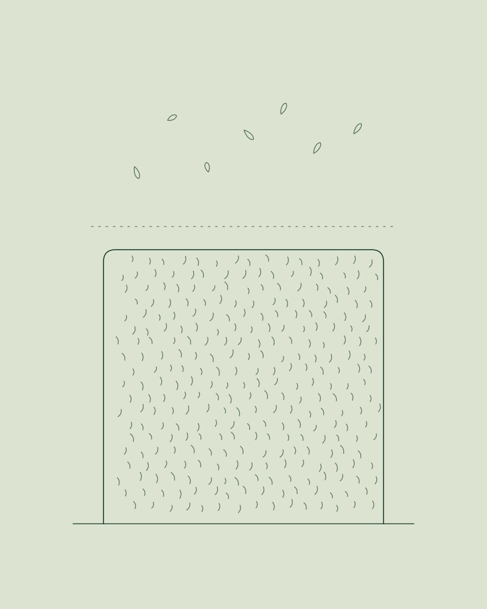
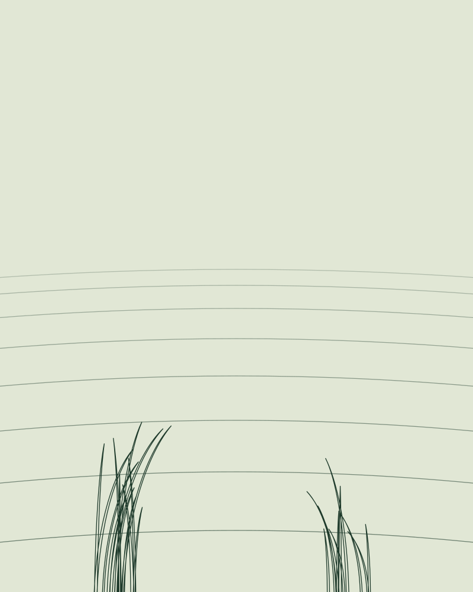
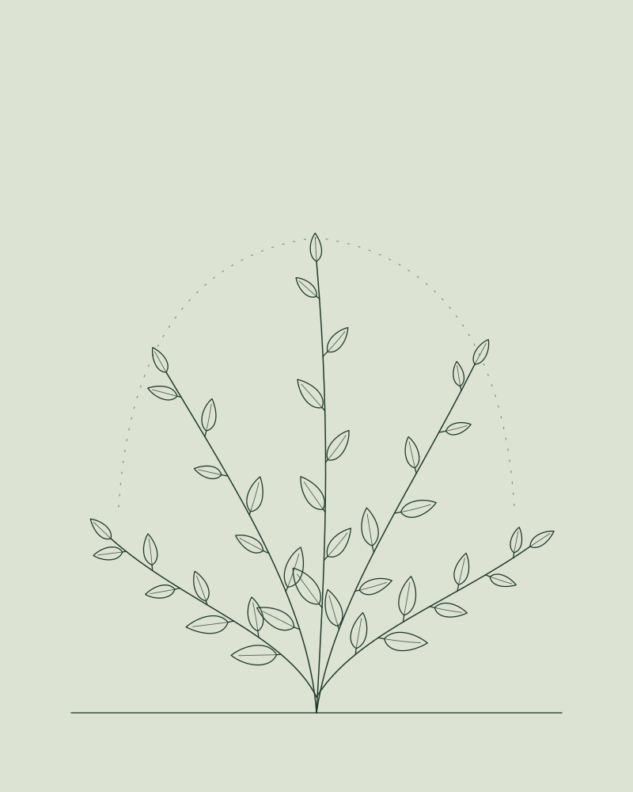
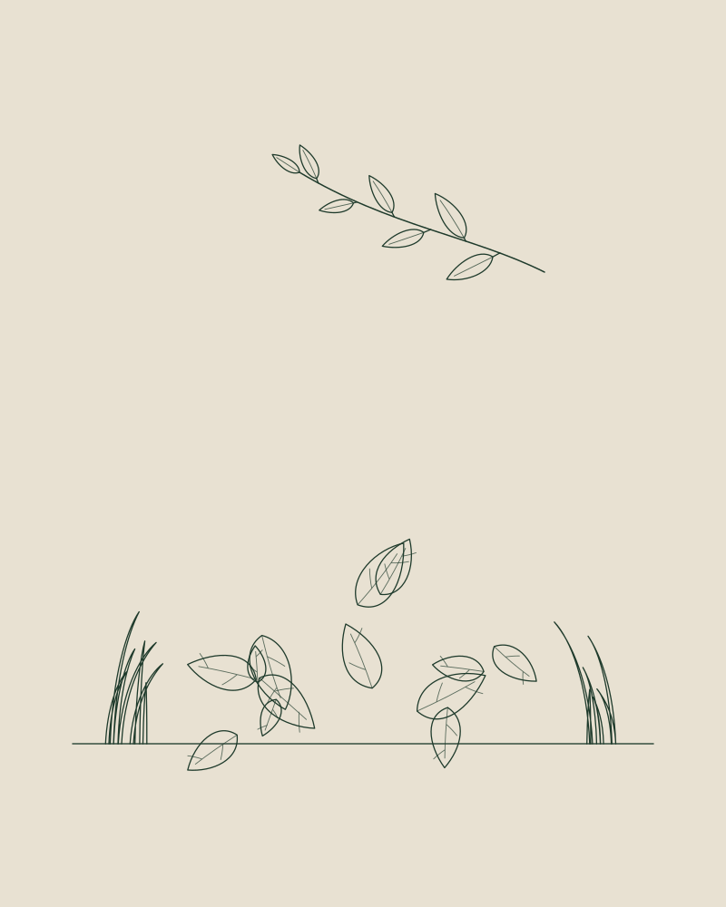
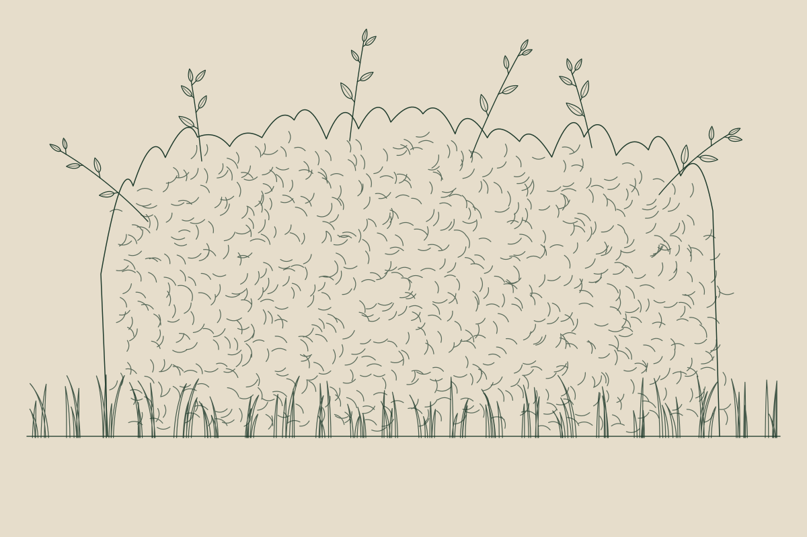
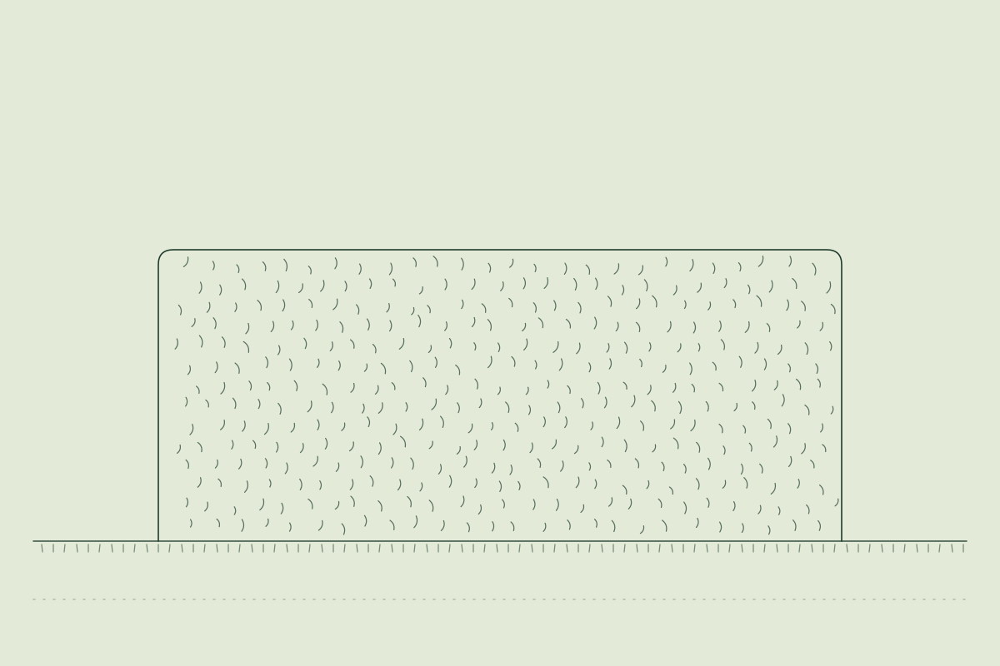

Foto folgt · Hecke nach dem FormschnittHeckenschnitt & Formschnitt
Saubere Kanten, gepflegte Form und ein ordentliches Gesamtbild.
- Formschnitt für klare Linien
- Regelmäßiger Pflegeschnitt
- Rückschnitt zu breit gewordener Hecken
Gartenservice in [ORT] und Umgebung
Heckenschnitt, Rasenpflege, Unkraut und Sträucher – einmalig oder regelmäßig. Zuverlässig, sauber und mit festem Ansprechpartner in [REGION].
Unverbindlich und kostenlos – gerne mit Foto
Leistungen
Einzelne Arbeiten oder regelmäßige Pflege: Sie sagen uns, was ansteht – wir erledigen es ordentlich.

Foto folgt · Hecke nach dem FormschnittSaubere Kanten, gepflegte Form und ein ordentliches Gesamtbild.

Foto folgt · frisch gemähter RasenRegelmäßiges Mähen für einen gepflegten Garten ohne zusätzlichen Aufwand.
Beete, Wege und Gartenflächen wieder ordentlich und gepflegt.
Anfragen
Foto folgt · Strauch nach RückschnittRückschnitt und Pflege für ein kontrolliertes, gesundes Erscheinungsbild.
Anfragen
Foto folgt · aufgeräumte GartenflächeDie Arbeiten, die regelmäßig anfallen – zuverlässig erledigt. Auch Aufräumarbeiten.
AnfragenAußerdem: Pflege von Grabstätten – ruhig, sorgfältig und respektvoll. Zur Grabpflege
Persönlich für Sie da
Sie sagen uns, was erledigt werden soll. Wir schauen uns die Arbeit an, besprechen den Umfang und kümmern uns anschließend darum, dass alles wieder ordentlich aussieht.
Keine Warteschleife, keine wechselnden Zuständigkeiten: Sie haben eine Person, die Ihre Anfrage von der ersten Nachricht bis zur fertigen Arbeit begleitet.
„Ich sehe mir jede Arbeit vorher an. Dann wissen wir beide, was gemacht wird – und am Ende sieht es so aus, wie wir es besprochen haben.“
Arbeitsbeispiele
Echte Arbeiten aus [REGION] – gezeigt nur mit Einverständnis unserer Kundinnen und Kunden.


Ablauf
Unkompliziert – von der ersten Nachricht bis zum gepflegten Garten.
Per Formular, WhatsApp oder Telefon. Gerne mit ein paar Fotos.
Wir klären, was gemacht werden soll – bei Bedarf direkt vor Ort.
Sie erhalten ein klares Angebot und einen Termin, der Ihnen passt.
Sauber erledigt. Danach sieht alles wieder ordentlich aus.
Die Anfrage ist kostenlos und unverbindlich.
Kostenlos anfragenGrabpflege
Wenn der Weg zu weit ist oder die Zeit fehlt, übernehmen wir die Pflege der Grabstätte. Ruhig, sorgfältig und mit dem nötigen Respekt.
Umfang und Häufigkeit besprechen wir in Ruhe mit Ihnen.
Kundenstimmen
[Echte Kundenstimme – nur mit Freigabe veröffentlichen.]
[Echte Kundenstimme – nur mit Freigabe veröffentlichen.]
[Echte Kundenstimme – nur mit Freigabe veröffentlichen.]
Einsatzgebiet
Wir arbeiten in [ORT] und im Umkreis von etwa [XX] Kilometern. Ihr Ort ist nicht dabei? Fragen Sie gerne kurz nach.
FAQ
Ihre Frage ist nicht dabei? Rufen Sie kurz an oder schreiben Sie uns.
Heckenschnitt und Formschnitt, Rasenmähen und regelmäßige Rasenpflege, Unkraut entfernen, Rückschnitt und Pflege von Sträuchern und Gebüschen sowie allgemeine Gartenpflege und Aufräumarbeiten. Außerdem pflegen wir Grabstätten.
Ja. Rasenmähen, Heckenschnitt und allgemeine Pflege lassen sich gut in festen Abständen erledigen. Wie oft wir kommen, stimmen wir gemeinsam mit Ihnen ab.
In [ORT] und Umgebung, unter anderem in [ORT 1], [ORT 2] und [ORT 3]. Ihr Ort ist nicht dabei? Fragen Sie gerne kurz nach.
Sehr gerne – das hilft sogar. Laden Sie die Fotos einfach im Anfrageformular hoch oder schicken Sie sie per WhatsApp. So können wir den Umfang oft schon vorab einschätzen.
Schicken Sie uns kurz, was erledigt werden soll – am besten mit Ort und Fotos. Wir melden uns, klären offene Fragen und sehen uns die Arbeit bei Bedarf vor Ort an. Danach erhalten Sie ein Angebot.
Ja, sprechen Sie uns auch bei kleineren Arbeiten gerne an – zum Beispiel für einen einzelnen Heckenschnitt oder ein Beet, das von Unkraut befreit werden soll.
Wir entfernen Laub und Unkraut, schneiden vorhandene Pflanzen zurück, säubern und ordnen das unmittelbare Grabumfeld und reinigen den Grabstein schonend mit Wasser. Chemische Reinigungen oder Restaurierungen gehören nicht dazu.
Nichts. Die Anfrage ist kostenlos und unverbindlich.
Anfrage
Schicken Sie uns kurz, was erledigt werden soll. Gerne auch direkt mit Foto.
[NAME] meldet sich persönlich bei Ihnen.
Wir sehen sie uns an und melden uns bei Ihnen. Bei Eiligem erreichen Sie uns unter [TELEFON].